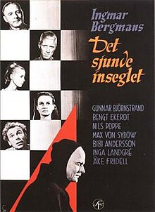

Favourite Movies List La Haine (Hate) Poster
- "What Makes La Haine a Captivating Masterpiece" by The Discarded
Image
La haine (1995)
8.1/10
The film follows three young men and their time spent in the French
suburban "ghetto," over a span of twenty-four hours. Vinz, a Jew,
Saïd, an Arab, and Hubert, a black boxer, have grown up in these
French suburbs where high levels of diversity coupled with the racist
and oppressive police force have raised tensions to a critical
breaking point.
#Crime #Drama #BlackAndWhite Det sjunde inseglet (The Seventh Seal) Poster

- "Mark Kermode reviews The Seventh Seal" by BFI Player
The Seventh Seal (1957)
8.1/10
A Knight and his squire are home from the crusades. Black Death is
sweeping their country. As they approach home, Death appears to the
knight and tells him it is his time. The knight challenges Death to a
chess game for his life. The Knight and Death play as the cultural
turmoil envelopes the people around them as they try, in different
ways, to deal with the upheaval the plague has caused.
#Drama #Fantasy #Classic #BlackAndWhite One Flew Over the Cuckoo's Nest Poster
- "Hidden Meaning in One Flew Over the Cuckoo's Nest – Earthling
Cinema" by Wisecrack
One Flew Over the Cuckoo's Nest (1975)
8.7/10
McMurphy has a criminal past and has once again gotten himself into
trouble and is sentenced by the court. To escape labor duties in
prison, McMurphy pleads insanity and is sent to a ward for the
mentally unstable. Once here, McMurphy both endures and stands witness
to the abuse and degradation of the oppressive Nurse Ratched, who
gains superiority and power through the flaws of the other inmates.